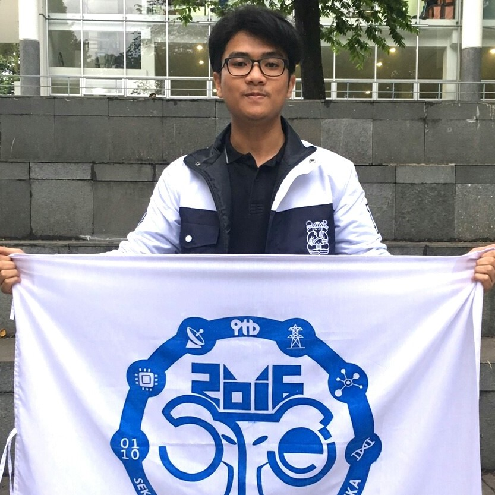

Hafis Alrafi Irsal
Padang, Indonesia
Tentang saya
Hafis Alrafi Irsal, atau yang biasa dipanggil Hafis, lahir di Kota Padang, Sumatera Barat, kota yang memiliki pantai Air Manis yang eksotis tempat lahirnya legenda Malin Kundang. Dia menyelesaikan pendidikan dari SD sampai SMA di kota Padang. Dimulai dari SD Negeri 04 Padang, dilanjutkan ke SMP Negeri 8 Padang, hingga mengukir kenangan di SMA Negeri 1 Padang. Selanjutnya takdir mengharuskan ia merantau ke Bandung untuk melanjutkan pendidikan, tepatnya di kampus Ganesha, Institut Teknologi Bandung. Kini sedang menempuh pendidikan di jurusan Informatika ITB. Penggemar dari tim sepakbola Barcelona ini mempunyai hobi bermain bola dan badminton serta pecandu dunia IT.
"life is short, don't make it shorter"
© Copyright 2018 | Hafis Alrafi Irsal
Photo by: John Towner